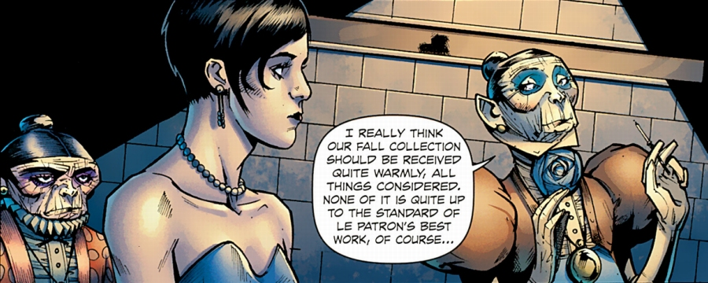
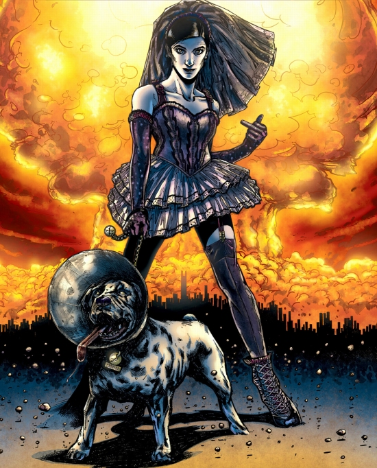

Fashion Beast, loosely based on the fairy tale ‘Beauty and the Beast’, was originally conceived by Alan Moore in 1985 while he was working on the graphic novel Watchmen, with the intention of it becoming a full length feature film.
The script was developed in co-operation with the late punk impresario Malcolm McLaren, who was pitching the [intended] film as ‘a mash-up of Beauty and the Beast and the life of Christian Dior’ and expected from Alan Moore to bring political depth and sexual politics to the mix, but ‘It was Malcolm who suggested that the main characters be a boy who looks like a girl … and vice versa.’ says Alan Moore.
As a nod to McLaren’s contribution, the dedication reads: “Dedicated to the memory of Malcolm McLaren. Too fast to live, too young to die.”
The movie, as you would have already guessed, was never filmed and the screenplay lay in the drawer, collecting dust, for almost thirty years, until an independent American publisher of comic books Avatar Press approached Moore with an idea to collaborate on a graphic novel adaptation of the script with an established British writer Antony Johnston (Wasteland, Dead Space). Alan Moore liked the idea. Illustrated by a relatively unknown artist Facundo Percio, Fashion Beast had a ten issue run, with the first issue released in September 2012.
In a dystopian future, with jobs scarce and nuclear winter looming, style is everything and fashion is a lone lighthouse which shines through the gloomy clouds.
In a dystopian future, where jobs are scarce and nuclear winter is looming, style is everything and fashion is a lone lighthouse which shines through the gloomy clouds of desperation.
The story of Fashion Beast focuses on Doll, a plain looking young girl, who works as a cloakroom lady in a trendy uptown nightclub. Doll is by no means ugly, but she is unattractive to a degree that she is often mistaken for a transvestite. During the daytime, Doll is an ordinary girl, but at night she dreams of stardom. After a young man, whom Doll refused entry to the club, mixes up all the numbers on the coats in her cloakroom, Doll finds herself fired and unemployed.
Desperate to find a new job, she attends an audition to be a model for Jean-Claude Celestine, a much sought after fashion designer. Against all the odds, Doll wins the audition and is chosen to be Celestine’s new model. To her astonishment, Doll recognises in an effeminate apprentice designer Jonni Tare, who also works at Celestine’s fashion factory, the lad who vandalised her cloakroom and because of whom she lost her job. There is an an instant rivalry between the two, but also a hidden, and at first unfulfilled, attraction which they feel towards each other.
It was Malcolm who suggested that the main characters be a boy who looks like a girl, and a girl who looks like a boy.
One day Celestine invites Doll to his office and confesses to her, that he hides in his room at the top of his enormous fashion factory, designing clothing and playing with tarot cards, in order to conceal his disfigurement. Celestine also talks about his late mother, saying that she was very beautiful and that she often commented on his ugliness. Doll demands to see Celestine’s face and is astonished to see that far from being a monstrous freak, Celestine is in fact an incredibly attractive young man, and that his conviction of ugliness originates only from his mother’s words and a peculiar mirror that severely distorts his real appearance. When Doll confronts her managers, Madame D. and Madame S., they tell her that they know about this, and deliberately keep Celestine in the dark, because he is only capable of designing outstanding clothing designs while seeing himself as a hideous, tortured genius. One day, disillusioned Celestine slits his wrists in an attempt to break free from his plight and his fashion factory he sees as a prison.
At Celestine’s last request, Jonni takes over as the head of the fashion house and the story comes full circle as Jonni discovers Celestine’s mirror and sees that it distorts his appearance in the same way as it did before Celestine’s…

In his later years, unpredictable Alan Moore, to the great dismay of his fans, distanced himself from some of his former works. Themes of his stories and his writing style also changed considerably. It comes as a relief then, that the Fashion Beast, written more than a quarter of the century earlier, is something like a time capsule, preserving a pure and unblemished Moore’s essence from the times when he wrote such classic works like his seminal comic Watchmen. Fashion Beast has its weak points, two of them being a slightly convoluted storyline (owing to its beginning as a screenplay) and the finale’s anti-climax, but it is nonetheless a required reading for all Alan Moore’s fans.